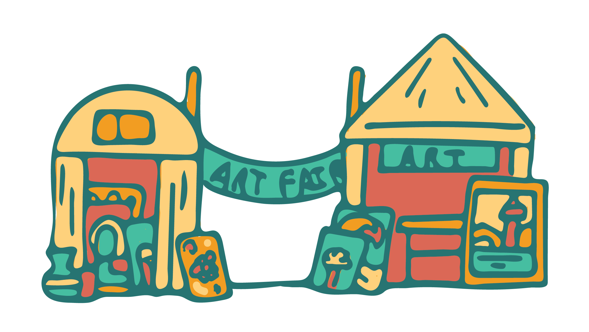

Preserve Venice is a nonprofit organization started by Luca Romano in December of 2019.
Preserve Venice was created to repair damage to buildings and landmarks caused by flooding, as well as providing conservation efforts for damaged arts, and preventative measures for future floods.
Longtime artist and resident of Venice, Luca witnessed firsthand the damages done to the city due to record flooding back in late 2019.
The city was hit by an exceptional acqua alta tide in November, with water levels reaching more than six feet, the highest in over 50 years. Since record-keeping began in 1872, such flooding has never occurred more than once in a year, never mind three times in six days.
Venice has been fighting against the high tides since the 12th century, with residents building up barrier islands to hold back the surrounding waters. Recently however, the channels have been dredged to allow tankers and cruise ships to reach nearby ports; the result has boosted the economy and tourism, and meant opening the lagoon to the Adriatic more often and creating a higher risk of flooding.
Preserve Venice will be hosting an annual Art Fair to raise awareness for Venice! Local artists around the city will come together and create work to showcase and sell, and all preceding will go towards conservation efforts for Venice. Join us the first week of May and see all the art and culture Venice has to offer!
